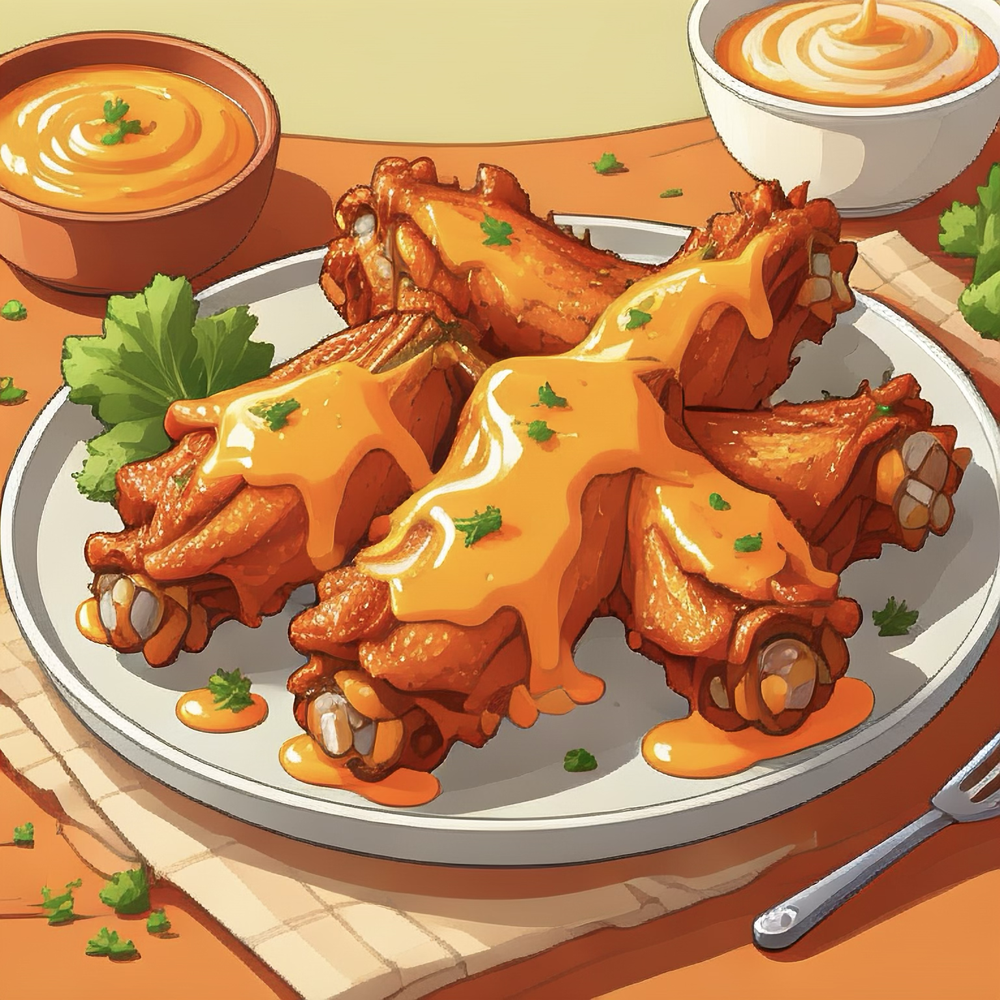

Homepage

Buffalo Wings
You can never go wrong with some buffalo wings, whether its for a party night
or looking for a meal high in protein to keeo the gains coming 💪.
Ingridients
For the Wings
- 1 Tbsp of Cornstarch
- 1/2 Tsp of Paprika
- 1/2 Tsp of Smoked Paprika
- 1/2 Tsp of Garlic Poweder
- 1/4 Tsp of Onion Powder
- 1/8 Tsp of Cayenne Pepper
- 1/4 Tsp of Black Pepper
- 1/2 Tsp of Salt
- 1 Tbsp of Cooking Oil
- 2 1/2 lbs of chicken wings/drums
For the Buffalo Sauce
- 4 Tbsp of Butter
- 1/2 cup of Frank's Redhot Sauce (or preffered hotsauce)
- 1 Tsp of Worcesteshire Sauce
- 1/2 Tsp Garlic Powder
Steps
Prep Time
and mix cornstarch, paprika, smoked paprika, garlic powder, onion powder,
cayenne, pepper and salt in it.
Wings Prep
and drizzle the cooking oil over them and toss until fully coated.
With the wings now oil coated, we can now add the cornstarch mix.
Toss one more time, until wings are coated with all the seasoings.
Baking Time
Place the chicken wings on the cooling rack with some slight space betwen them.
Insert the naking sheet into the oven and let them cook for 30 minutes. At the 30 minute mark,
take out the sheet and flip the wings to the other side and bake for another 20-25 minutes or
until desired doneness.
Sauce Time
our buffalo sauce. In a sauce pan, melt the butter over medium heat and mix in the hot sauce,
garlic powder, and worcesteshire sauce.
Final Coat
and allow the wings to get fully coated with our buffalo sauce. Wings are now ready to be plated and served.
Back to recipes